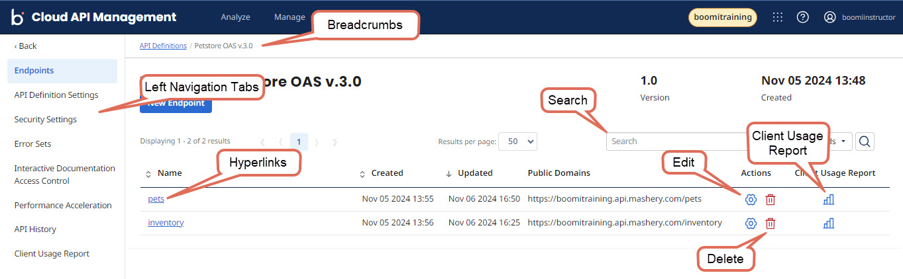
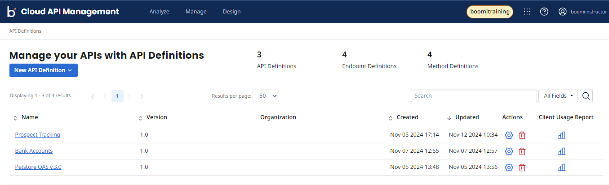
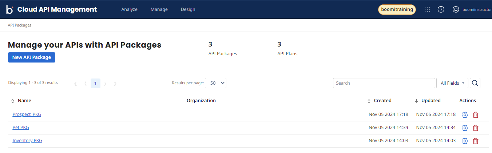
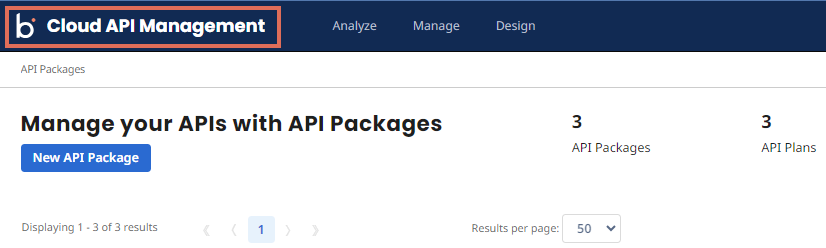
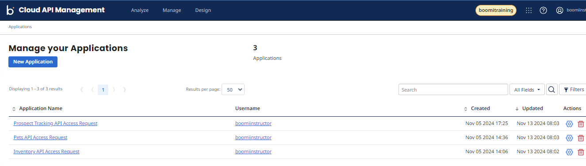
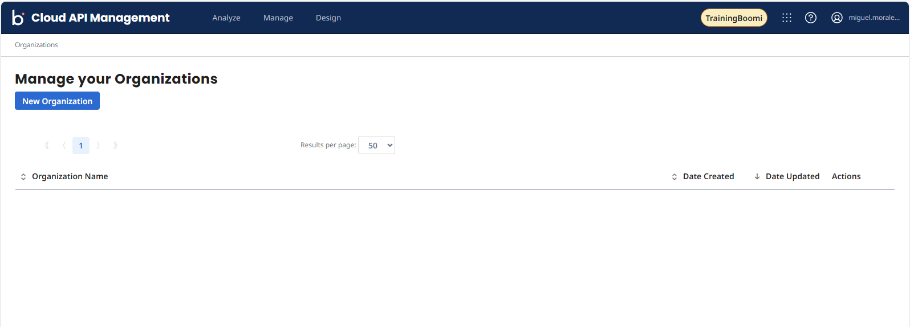
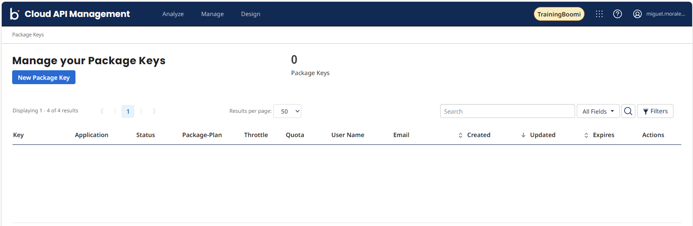

Exercise 2 — Navigate Cloud API Management
Tour the Control Center and the pages you'll use for the rest of the lab — API Definitions, API Packages, Applications, Organizations, and Package Keys — and learn what each one is for.
What you'll cover
- Navigation Overview & Control Center
- API Definitions
- API Packages
- Applications
- Organizations
- Package Keys
Navigation Overview & Control Center
-
1
From the previous activity, you launched Cloud API Management. We also call it CAM. Now that you have a Cloud API Management tenant, let’s review the different screen elements you will encounter while navigating this tool.

When you launch Cloud API Management, you will land on the Control Center Home page.
API Definitions
This is where you, as the name implies, define the API Specification in Cloud API Management. This page includes the Traffic Manager. Traffic Manager is the most important feature of Cloud API Management. It connects Cloud API Management APIs to the source or backend system APIs.
-
1
From the Control Center select API Definitions. You can go to the same page by selecting Design > APIs from the Top Menus area. The API Definitions page appears. The following screenshots will look different from your page. You should have no API Definitions listed if this is your first time using Cloud API Management. Later, you will have the opportunity to create APIs on this page.

-
2
Select the App Launcher and select Control Center.
API Packages
The API Packages page enables the creation of API access Plans that can be tailored to groups of developers or partners, without any coding. Each API Plan constitutes a set of entitlement rules, limits, and filters that might be enforced when developers make calls to specific API methods or resources.
-
1
Select the API Packages Tile. This is where you create and configure your plans, rate limits, access control and other settings. Later you will see the importance of this feature.

Another way to return to the Control Center is by selecting the top Cloud API Management banner. From the top-left, select the Cloud API Management banner.

Applications
An Application captures information about the intended use of the API by the developers. It is like asking permission to use the API. The Administrator will check the developer’s request and determine if the submission can be approved or denied.
-
1
From the Top Menu, select Manage > Applications. This is an alternative route to open the Applications page instead of using the Tile. The Applications page opens. It must be blank but eventually, you will see Applications here. Usually, Applications are requested by external API Developers who want to access and use your APIs. But Internal API Administrators can create them to test the functionality of the APIs.

-
2
Go back to the Control Center.
Organizations
This is one of the first configurations you will need to perform. To enforce security and governance, you must setup Organizations. These will be used as security mechanisms to control who has access to what. In later activities, you will create Organizations and assign Users to them.
-
1
From the top menus, select Manage > Organizations. Your Organizations page and structure should be blank. During the next activity you will be creating Organizations.

Package Keys
On the Package Keys page, you will find all the Packages with Plans and their corresponding Keys. This page is a quick way of finding those Keys. Later, you will see where these Keys can be found in the Developer Portal.
-
1
From the top menus, select Manage > Package Keys. You should not have any Package Keys created but soon you will come back here to find the ones you created.

This concludes the Navigation Activity. There are additional pages and sections you can explore, particularly under the Analyze menu.